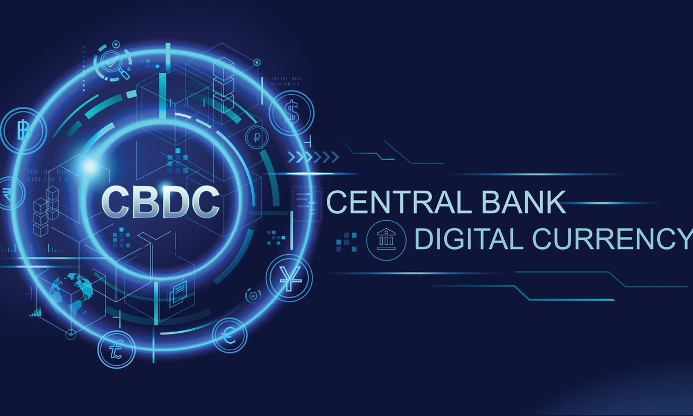

CBDC SOLUTIONS MIGHT NOT BE SOVEREIGN

CBDC = Central Bank Digital Currencies
CBDC’s are an incredibly exciting possible innovation for a country. But, we realize that there are serious challenges and requirements not met in relation to sovereignty, security, and scalability in many of the current project proposals.
This is not only for CBDC’s, but blockchain technology in general.
We want to make sure that this does not happen for your country. We want to make sure your country stays and is in control over their country's money supply. Right now in some deployments we see that this is a real risk, countries could lose control to other countries or hackers.
Buying into a technology from a vendor which does not apply to following requirements is discouraged
- 100% of blockchain needs to be in the country (nodes, technology, knowledge, …)
- The source code of the blockchain technology used needs to be understood by engineers/developers living and working in your country and working for a trusted entity (or more than one)
- The blockchain technology needs to be truly decentralized
- e.g. the coders should not be able to change the blockchain operation (right now most tech companies can change blockchain through changing the code)
- The validator nodes cannot be hosted in datacenters out of the country or be owned by too few parties.
- It needs to be verified that there are no backdoors in the blockchain technology.
- Blockchain needs to be scalable enough
- Even if internet backbone connections go down (e.g. between the country and the rest of the world), the blockchain should keep on working.
- Blockchain should be energy efficient and not based on burning of fossil fuels or energy in general.
- There need to be procedures to allow the legal system of your country to interfere in case that serious issues arise.
- There needs to be a mechanism for people to manage their identity and private keys with more user friendliness (today it's too complicated and too dangerous)
- Running blockchain permissioned (which means managed by people in centralized datacenters) might bring the risk of running a money chain related to a couple of people who need to be trusted, this might even be less regulated than in a typical central banking environment.